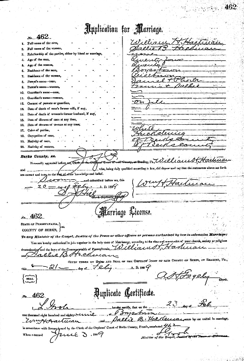

Paul Heckman HARTMAN
born 18 Apr 1898 in Boyertown, PA
died 10 Feb 1940 in Philadelphia, PA
(infant girl) HARTMAN
born 31 Jul 1901
died 31 Jul 1901
Lucy H. HARTMAN
born 25 Nov 1904
died 22 Aug 1941 at Macungie, PA
On February 23, 1889, William H. HARTMAN of Boyertown, PA, age 24, was married to Sallie B. HECKMAN of Pricetown, PA, age 20, in Boyertown, PA. The marriage application lists William's occupation as "huckstering."

[gray boxes above indicate that the person is buried at Fairview Cemetery in Boyertown, PA]
William and Sallie are buried together with their first two children, Laura and Verna, at Fairview Cemetery in Boyertown, PA.